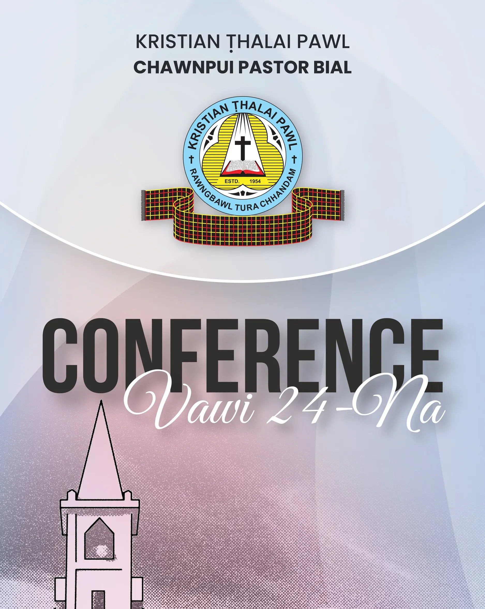

Thlalak Link
Chawnpui Pastor Bial KTP Conference Chet Velna

Zirtpawni Zan Inkhawm
Inrinni Chhun Rorel Ni
Inrinni Zan Inkhawm
Inrinni Zan Fellowship
Pathianni Chawhma Inkhawm
Pathianni Chawhnu Inkhawm
Pathianni Chawhnu Fellowship
Pathianni Zan Inkhawm